About Us
Our story and journey to the wedding day.
Jessica and myself met in 2017 with the help of well-known love finding app - Tinder!
In fact, If I hadn't opened Tinder for 5 minutes whilst visiting my dad, just to show Tasha how it worked, us meeting may never have even happened!
At this time, I was at Uni and Jess was at college. Although we'd only intended to meet once or twice, we were always incredibly drawn to one another
We continued seeing each other for some months, but in that time Jess got to know my whole family and we rapidly realised, this was going to be a LOT more than a simple few meetings and goodbye.
On june 20th 2018 I asked Jess to be my girlfriend. We were overwhelmed with emotion after denying the distance between Essex and Norwich could work with the journeys we were on in our lives, but we then knew we had to make it happen.
We arranged to live at Jess' parents in Norwich when I got a job there following graduating Uni, and after an amazing trip to Thailand together we began flat hunting.
The only real test for us came during lockdown, after we'd just found a flat and Jess had just quit a job! Though it was tough at times, and money was often a problem, I don't think there was ever a moment we thought being apart would be remotely better for either of us, as we continued to lift each other up and make the most of the time we had together. I genuinely can't imagine a better partner I could have had over that time and will forever cherish that we got to spend almost every waking moment together.
Since then, we moved back to Colchester for my job where I now work as a civil servant for the MoJ and Jess is a supplier manager, just about able to buy a house here in May 2022 before the housing market went too mad.
We're hoping to move back to Norwich soon though, all you lucky people who live there, so we'll let you know when that comes around! Just a marriage to do inbetween, surely that won't be that difficult...
On December 29th 2023 I decided enough was enough and it'd be very silly of me to not make this amazing woman - who's helped me deal with my emotions, mental health, made me stronger and overall a better person - into my wife, and I proposed to her by the lake where I first decided to go to Uni in Rochford where I was born.
If I hadn't deicded Uni was for me that day, again, maybe we'd have never met.
I am forever grateful for all the events, and to all the people I have mentioned above who helped us find one another, but also all the other amazing friends and family we have who have made both of us feel welcome and strengthened our bond over the years, you all know who you are!
That's the rough story of us for now, but there's plenty more to come. And I hope you'll join us in celebrating our next great milestone together on April 19th 2025.
Thank you!
 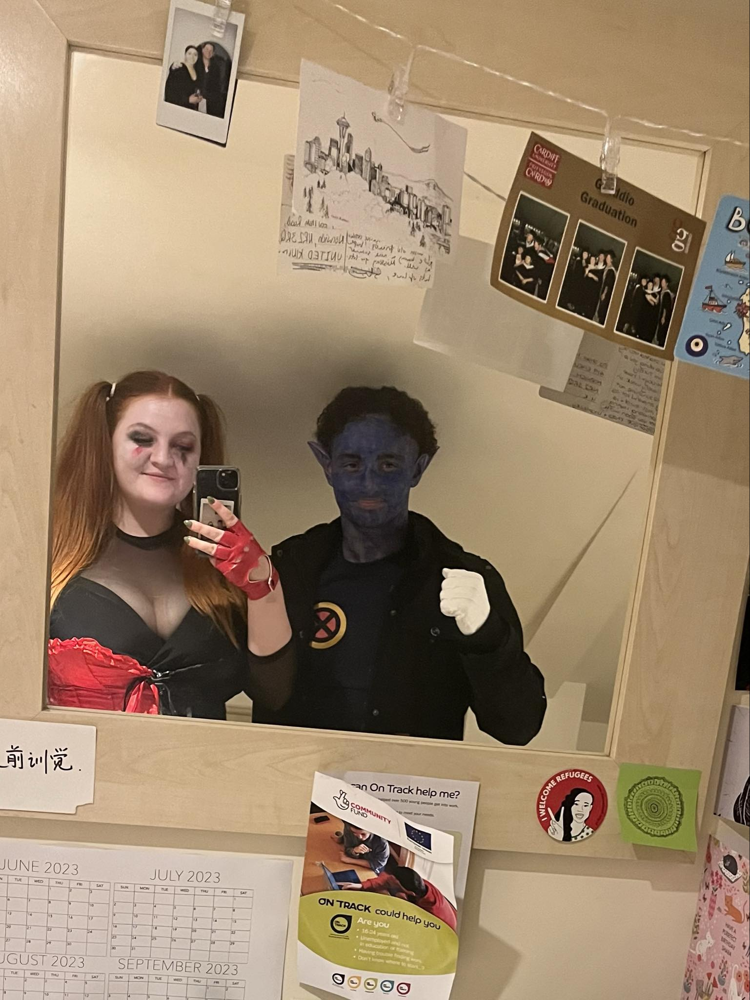
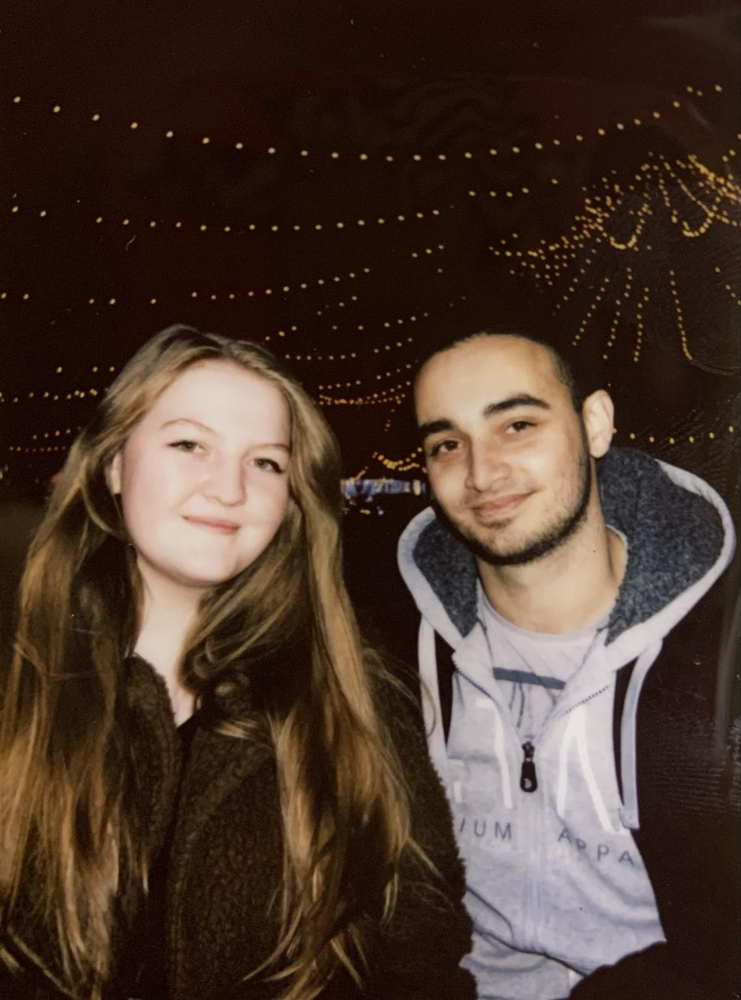
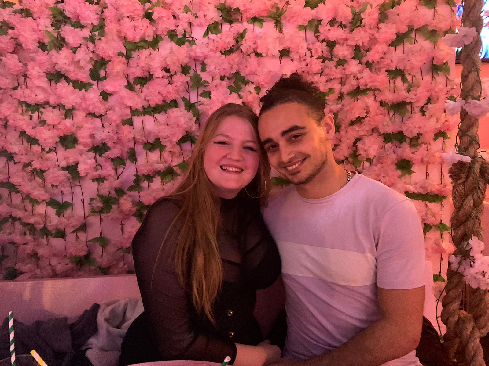
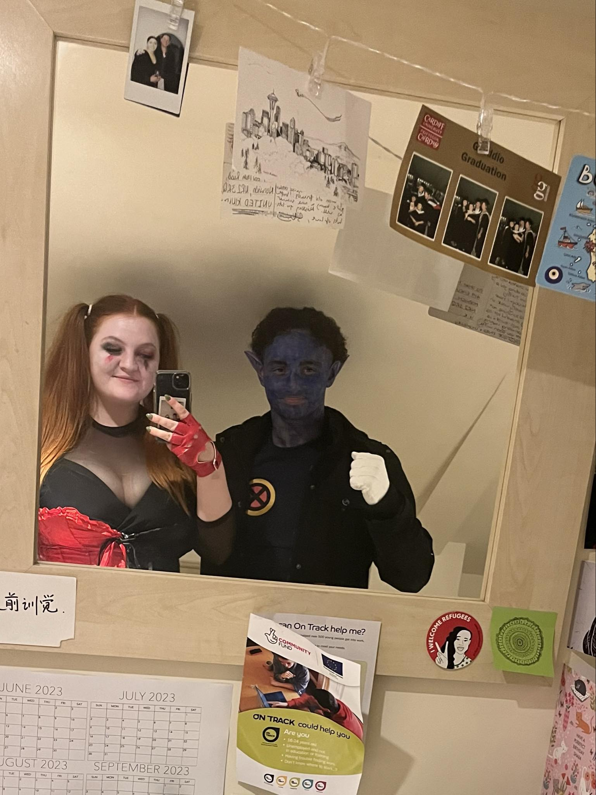
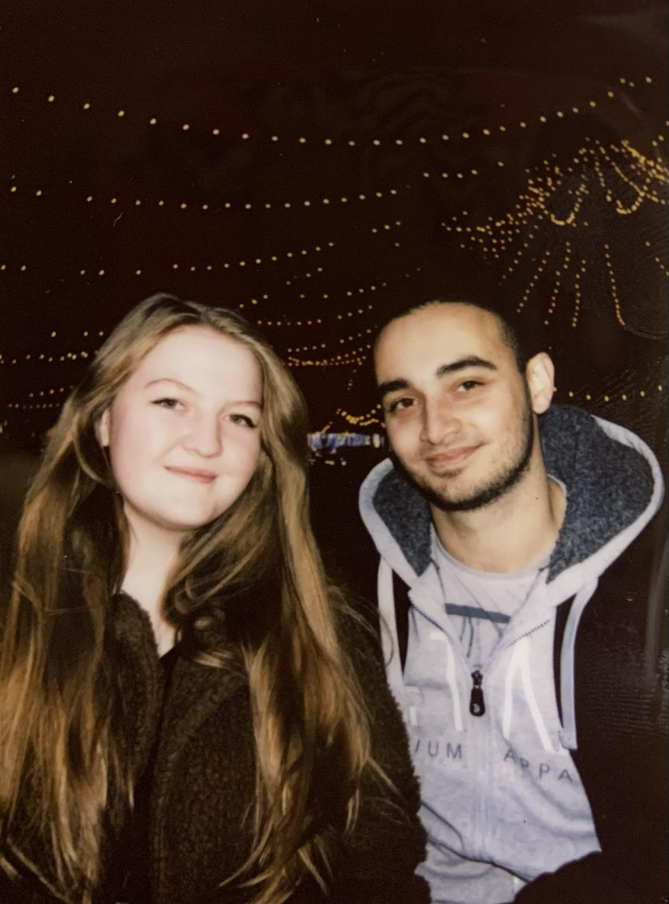
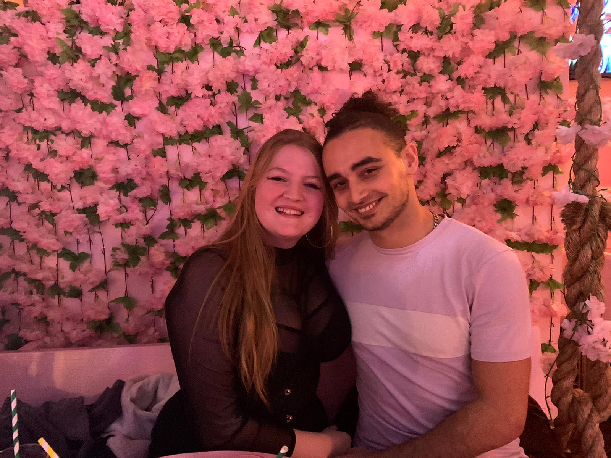
 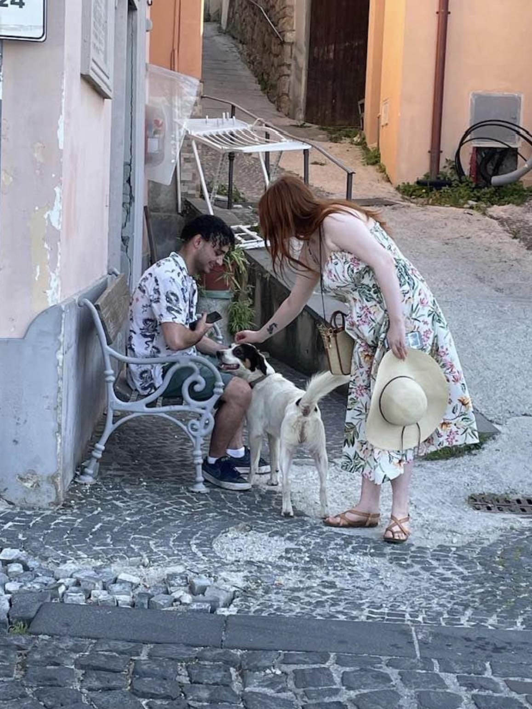
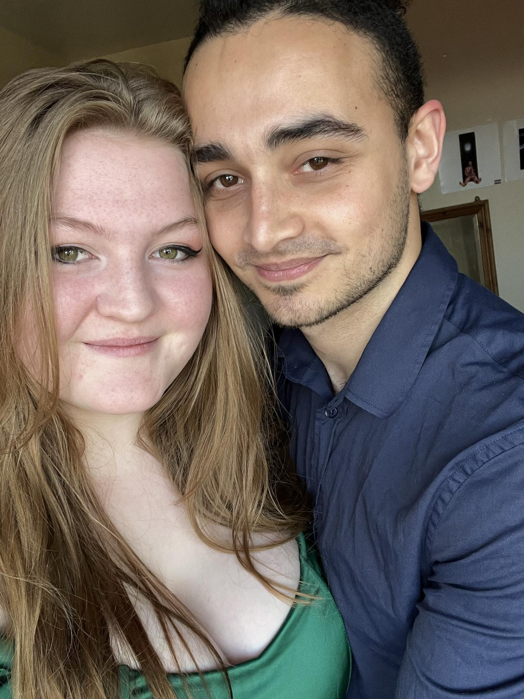
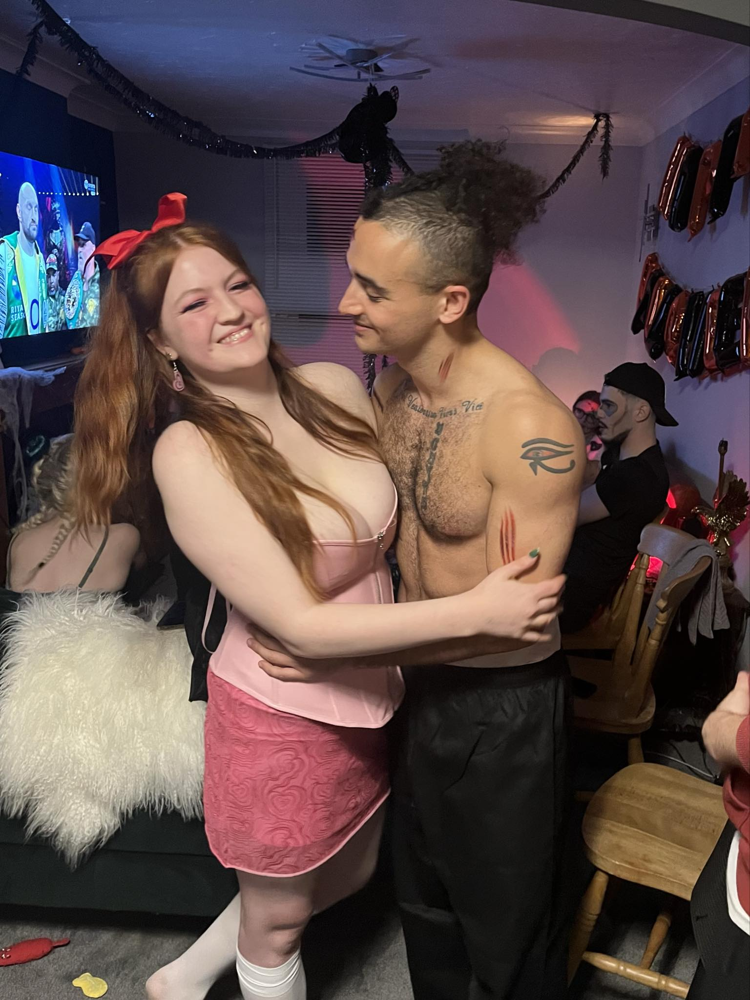
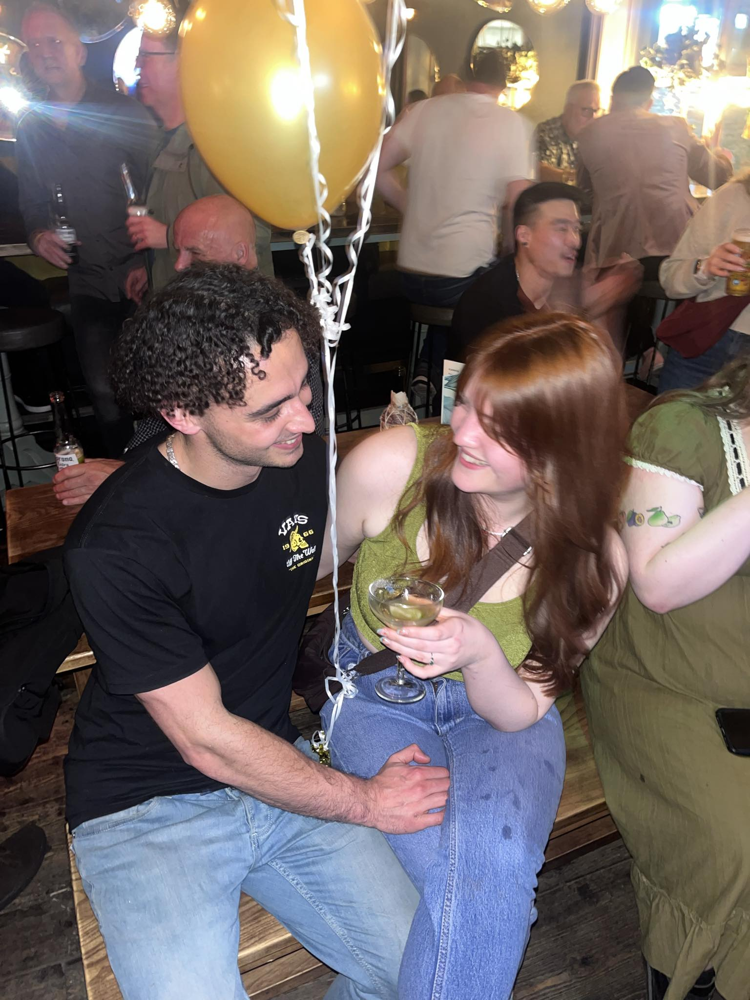
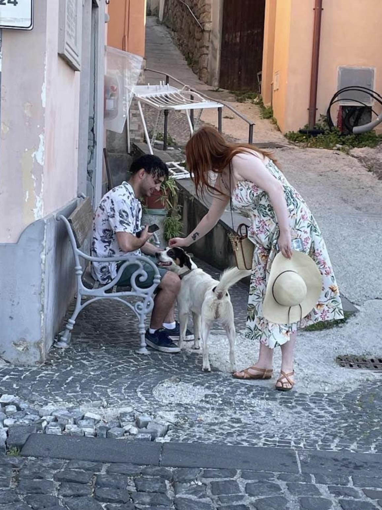
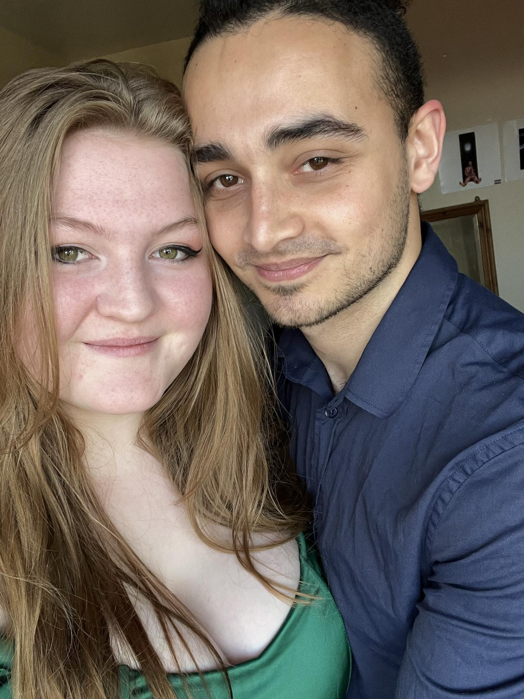
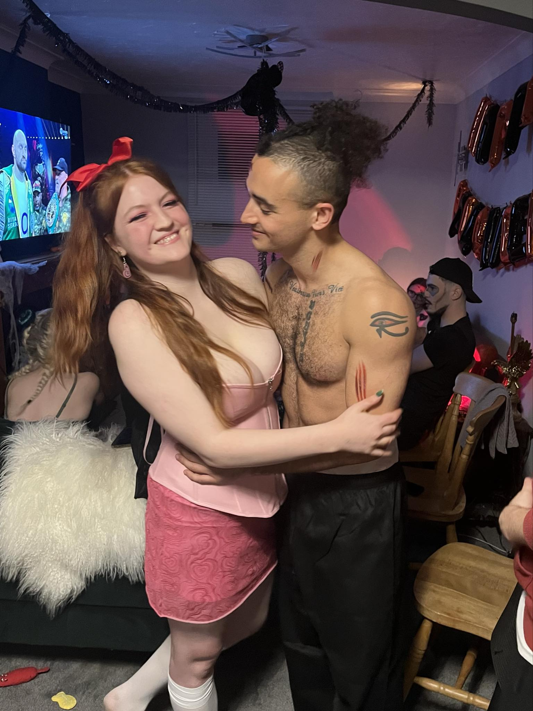
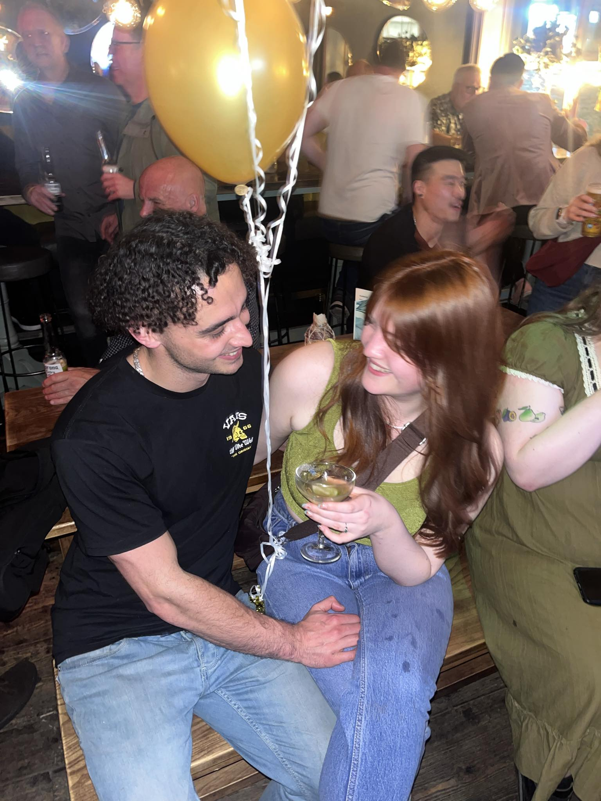